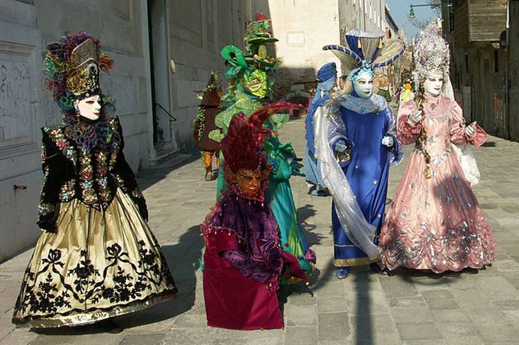
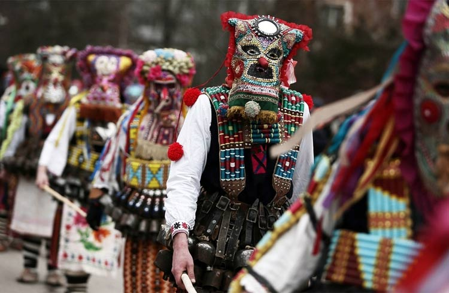
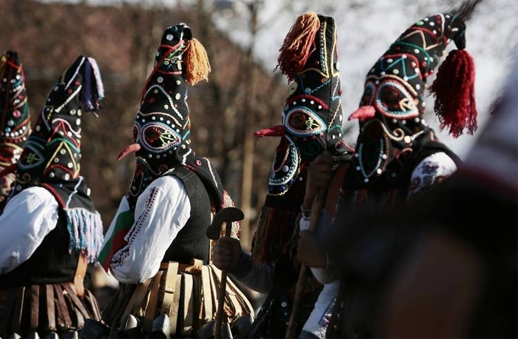

欧洲中世纪时，宗教势力异常强大，不能愉快的唱歌跳舞的人们被压抑的好痛苦，这种痛苦在威尼斯人身上表现的尤其明显——因为他们是土豪。地中海旁边的威尼斯，聚集了许许多多的商旅和骑士，各个国家的“土特产”都在这里转运，这个小小的城市各种娱乐场所遍地开花，夜生活也是极其丰富多彩。但是！宗教要求人们克制，放肆的人是会遭受惩罚的，所以机智的人想出了一个办法——戴着面具去狂欢（我胡说的我会乱讲）！
对那时候的威尼斯人来说，出门戴面具就像出门穿衣服一样理所当然，不管你是商人贵胄还是草根穷鬼，你都要有那么几个拿得出手的面具。教会还是那么的讨厌，但这种娱乐方式是人心所向，所以屡禁不止，开心就好，谁管谁呀有没有！
去威尼斯旅游，最应该买的纪念品就是面具，这简直和去泰国买个大象周边一样理所应当。带上面具，软妹子瞬间变成女汉子，胡子拉碴的大男人一秒变性感美女，老人变年轻，给你数不清的惊奇。
威尼斯人利用面具各种狂欢，但真正给了面具一个“名分”的还是保加利亚——他们设立了面具节，让面具光明正大的拥有了自己的节日。
每年的1月底保加利亚都会隆重的庆祝面具节，节日期间，人们戴着自己喜欢的面具，扮成各种各样的角色行走在街头。戴着恐怖面具的巨人、怪物招摇过市，腰间重达七八十斤的铜铃声音震耳欲聋，美丽的小仙女、男扮女装的“新娘”、老巫婆粉墨登场，保加利亚佩尔尼克市还会举办热闹非凡的面具嘉年华，这是巴尔干半岛上规模最大的面具巡演活动。
在保加利亚的各个巡演队伍中，几乎都能看到男扮女装的面具演员。有的男子披着白色婚纱抹上口红扮演新娘，有的戴上褶皱面具、拄着拐杖扮演老太太，有的戴上头巾、穿着裙子扮演小媳妇。男扮女装是保加利亚面具巡演的一大传统，据面具节组委会主席克拉埃夫介绍，面具节还是庆祝丰收、祈求来年风调雨顺的节日，男扮女装正是为了体现保加利亚人对女性劳动付出的尊重和感谢。
1、每年的1月底保加利亚都会庆祝面具节，面具已成为了保加利亚的一门艺术；
2、1月底去保加利亚狂欢吧，戴着面具可劲的嗨，反正也没人能看到你的脸！